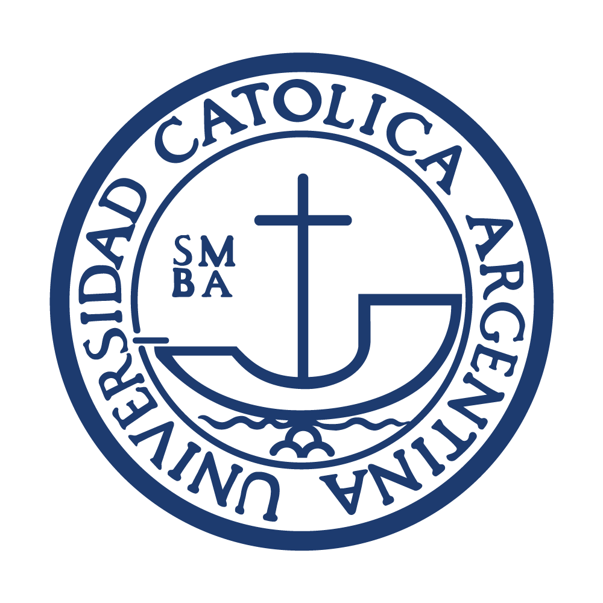

Educación
-
 Educación primaria y secundaria:
Educación primaria y secundaria:
Colegio bilingüe Edmondo de Amicis, 1999-2010
- 
Educación Universitaria:
Universidad Católica Argentina, 2011-2016
Colegio bilingüe Edmondo de Amicis, 1999-2010
Universidad Católica Argentina, 2011-2016
Curso de Asistente jurídico, 2014, I.C.R Rosario
Especialización en derecho deportivo, 2015, Universidad Católica argentina
Posgrado el procesos de familia, 2018, Universidad Nacional del Litoral
Diplomado en derecho civil argentino, 2020, Universidad de la Pampa
Curso en ciberdelito y evidencia digital, 2020, Universidad Católica Argentina
Curso de Mandatario Nacional del Automotor, 2021, ICIEC
Curso de Full Stack Developer Jr. Argentina Programa, 2022